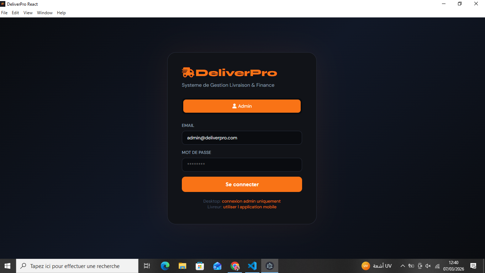
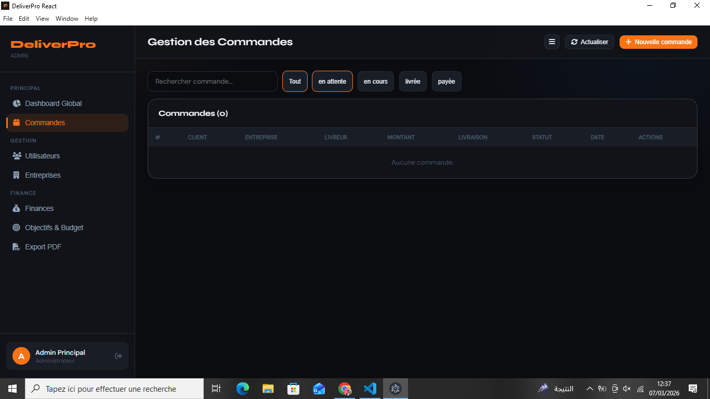
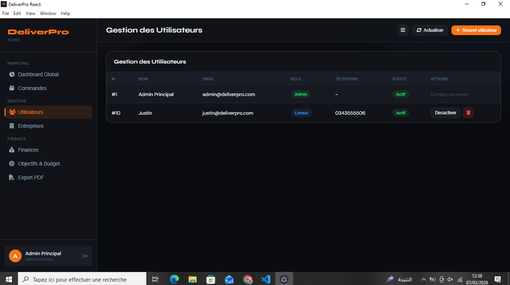
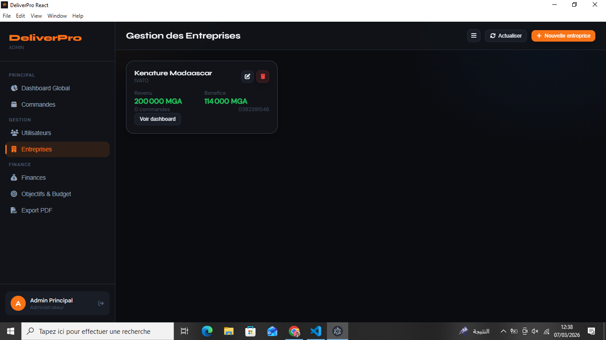
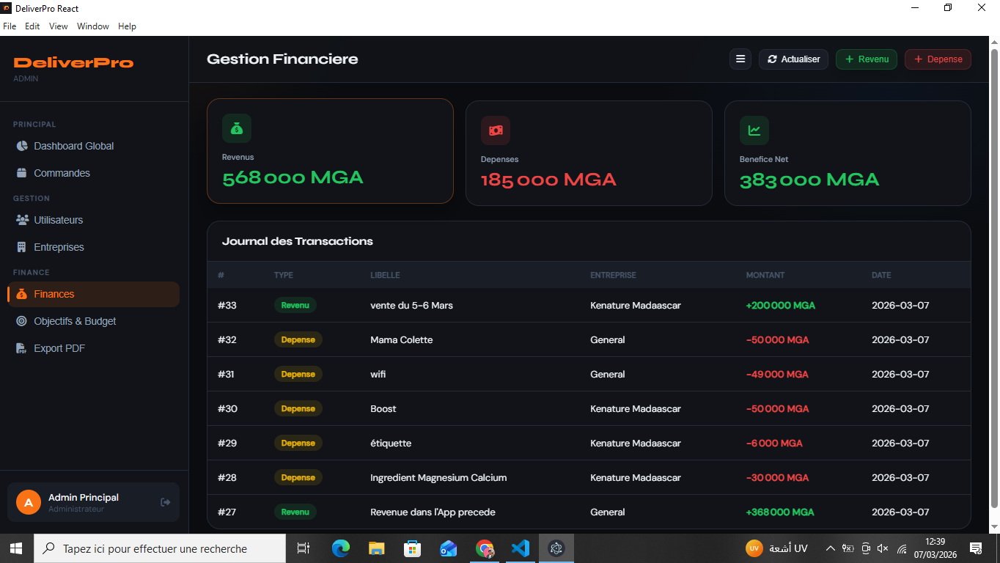
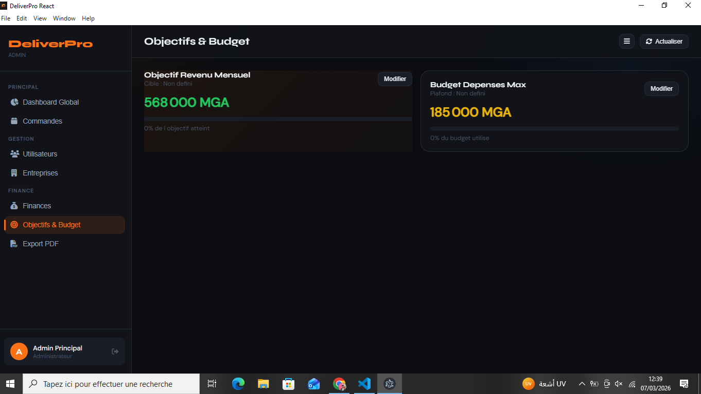
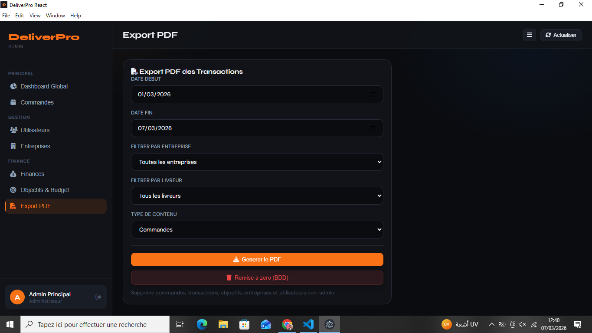

Defi
Centraliser les operations quotidiennes et les indicateurs financiers dans une interface claire, rapide et simple a prendre en main.
RAKOTOMALALA Fenotiana Michael
ME CONTACTERUne application desktop de pilotage concue pour centraliser les commandes, les utilisateurs, les entreprises partenaires et les finances dans un seul back-office.
Contexte
DeliverPro a ete concu pour repondre a un besoin metier concret : suivre une activite de livraison depuis une seule interface, sans alterner entre plusieurs tableaux, fichiers ou espaces de travail. L'objectif etait de donner a l'administrateur une vision claire de l'activite, du statut des commandes jusqu'au suivi financier global.
Centraliser les operations quotidiennes et les indicateurs financiers dans une interface claire, rapide et simple a prendre en main.
Une application desktop React + Electron connectee a une API metier, avec authentification admin, dashboard global, modules de gestion et export.
Les commandes, les utilisateurs, les entreprises et les finances sont regroupes dans un poste de pilotage unique et plus lisible.
React, Vite, Electron, API REST, JWT, packaging Windows et logique de gestion metier.
Ce projet montre ma capacite a concevoir une vraie interface metier : un outil qui ne se contente pas d'etre visuel, mais qui sert au pilotage quotidien d'une activite. L'application transforme des donnees operationnelles en informations directement exploitables, avec une interface admin lisible et un flux de travail pense pour l'efficacite.
L'application a ete pensee comme un outil de bureau moderne, avec une interface sombre, une navigation laterale claire et des ecrans specialises pour chaque besoin metier.







